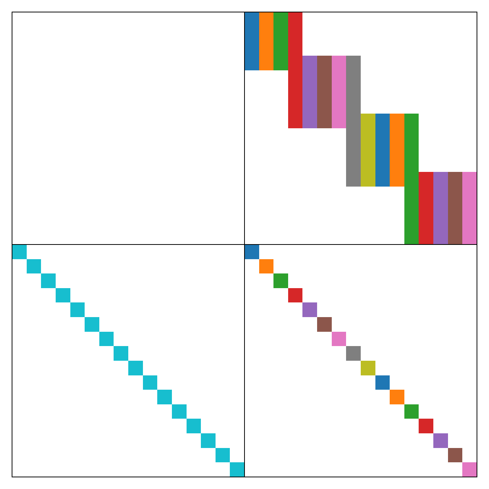

Sparse Jacobian evaluation for implicit semidiscretizations
SemidiscretizationImplicit supplies a sparse Jacobian prototype to OrdinaryDiffEq.jl by default. The prototype determines the Jacobian storage, while the time integration algorithm's autodiff setting determines how its entries are computed. With adaptive mesh refinement, HydroTrixi.jl rebuilds the prototype and associated Rosenbrock solver state whenever the mesh topology changes.
For the mixed Richards formulation, the state is $\boldsymbol{y}=(\boldsymbol{\Theta},\boldsymbol{\Psi})^\mathrm{T}$, where $\boldsymbol{\Theta}$ is water content, and $\boldsymbol{\Psi}$ is pressure head. Let $\boldsymbol{\mathcal{R}}(\boldsymbol{\Psi},t)$ denote the spatial residual, and let $\boldsymbol{\vartheta}(\boldsymbol{\Psi})$ denote the nodal constitutive map. The residual and its Jacobian sparsity pattern are
\[\boldsymbol{\mathcal{F}}(\boldsymbol{y},t) = \begin{bmatrix} \boldsymbol{\mathcal{R}}(\boldsymbol{\Psi},t) \\ \boldsymbol{\Theta}-\boldsymbol{\vartheta}(\boldsymbol{\Psi}) \end{bmatrix}, \qquad \operatorname{pattern}\left(\frac{\partial\boldsymbol{\mathcal{F}}} {\partial\boldsymbol{y}}\right) = \begin{bmatrix} \boldsymbol{0} & \boldsymbol{S} \\ \boldsymbol{I} & \boldsymbol{I} \end{bmatrix}, \qquad \boldsymbol{S} = \operatorname{pattern}\left( \frac{\partial\boldsymbol{\mathcal{R}}}{\partial\boldsymbol{\Psi}}\right).\]
jac_prototype stores zeros at the coordinates in this pattern. Entries arising only from the temporal mass matrix $\boldsymbol{A}$ are added by OrdinaryDiffEq.jl when it constructs the Rosenbrock matrix $\boldsymbol{A}-\gamma\Delta t_n\boldsymbol{J}_n$.
We now construct and visualize this pattern for a small mixed Richards problem with $K=4$ elements and polynomial degree $N=3$, following examples/elixirs/elixir_richards_manufactured_solution.jl:
using CairoMakie
using HydroTrixi
using SparseArrays
using Trixi
asset_dir = docs_generated_dir("richards_jacobian_sparsity")
problem = HydrologicProblemRichardsManufacturedSolution(tspan = (0.0, 1.0))
mesh = TreeMesh(problem.domain...; initial_refinement_level = 2, periodicity = false)
solver = DGSEM(polydeg = 3)
semi = SemidiscretizationImplicit(mesh, problem, solver;
solver_parabolic = ParabolicFormulationLocalDG(),
form = MixedForm(),
passive_variables = NoPassiveVariables())
ode = semidiscretize(semi, problem.tspan);For this one-dimensional mixed Richards discretization, the Jacobian prototype has $K(N+1)^2 + 2(N+1)(K-1) + 2K(N+1)$ stored entries. The first term contains dense element-local entries of $\partial_{\boldsymbol{\Psi}}\boldsymbol{\mathcal{R}}$, the second term contains LDG interface entries, and the third term contains the two constitutive identity diagonals. We verify the prototype size, number of stored entries, and stored values:
mesh, equations, solver, cache = Trixi.mesh_equations_solver_cache(semi.semi_base)
n_nodes = Trixi.nnodes(solver)
n_elements = Trixi.nelements(solver, cache)
n_interfaces = length(Trixi.eachinterface(solver, cache))
n_state_dofs = n_nodes * n_elements
expected_nonzeros = n_elements * n_nodes^2 + 2 * n_nodes * n_interfaces +
2 * n_state_dofs
jac_prototype = ode.f.jac_prototype
@assert size(jac_prototype) == (2 * n_state_dofs, 2 * n_state_dofs)
@assert nnz(jac_prototype) == expected_nonzeros
@assert all(iszero, nonzeros(jac_prototype))Column colouring
A column colouring groups Jacobian columns whose structural row supports are disjoint into one compressed seed direction. Forward-mode automatic differentiation propagates several colour directions as separate components of the same dual numbers. ForwardDiff.jl batches up to 12 directions by default, so all ten colours used here are evaluated in one residual evaluation. HydroTrixi.jl supplies the deterministic colouring in colorvec together with the Jacobian prototype:
column_colors = ode.f.colorvec
n_spatial_colors = 2 * n_nodes + 1
n_colors = maximum(column_colors)
@assert column_colors[1:n_state_dofs] == fill(n_colors, n_state_dofs)
@assert column_colors[(n_state_dofs + 1):end] ==
mod1.(1:n_state_dofs, n_spatial_colors)
@assert n_colors == n_spatial_colors + 1The pressure-head columns require $2N+3$ colours, assigned cyclically in spatial storage order. The water-content columns each have a single structural entry in a distinct row, so they all share one additional colour. We verify the defining property of the colouring: every row has distinct colours among its structurally nonzero columns.
row_indices, column_indices, _ = findnz(jac_prototype)
for row in axes(jac_prototype, 1)
row_colors = column_colors[column_indices[row_indices .== row]]
@assert allunique(row_colors)
endTo visualize the sparsity pattern and colouring together, we assign each stored Jacobian entry the colour of its column.
colored_pattern = fill(NaN, size(jac_prototype))
for (row, column) in zip(row_indices, column_indices)
colored_pattern[row, column] = column_colors[column]
end
palette = cgrad(:tab10, n_colors; categorical = true)
figure = Figure(size = (650, 650))
jacobian_axis = Axis(figure[1, 1]; aspect = DataAspect(), yreversed = true)
hidedecorations!(jacobian_axis)
heatmap!(jacobian_axis, transpose(colored_pattern); colormap = palette,
colorrange = (0.5, n_colors + 0.5))
vlines!(jacobian_axis, n_state_dofs + 0.5; color = :black, linewidth = 1)
hlines!(jacobian_axis, n_state_dofs + 0.5; color = :black, linewidth = 1)
figure_path = joinpath(asset_dir, "coloring.png")
save(figure_path, figure; px_per_unit = 2)
println("Saved $(n_colors)-colour Jacobian colouring with $(nnz(jac_prototype)) entries " *
"to " * figure_path)Saved 10-colour Jacobian colouring with 120 entries to /home/runner/work/HydroTrixi.jl/HydroTrixi.jl/docs/src/assets/generated/richards_jacobian_sparsity/coloring.png
The black lines separate the water-content and pressure-head blocks.
